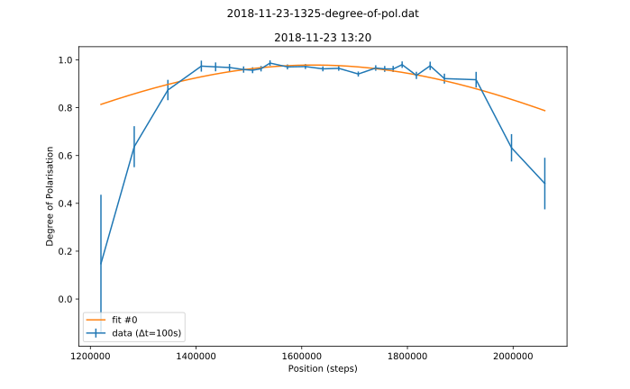

Here is some basic information about the measurement, which was either provided by you, or automatically detected.
Here is some basic information about the measurement, which was either provided by you, or automatically detected.
1220000.02060000.0[0.14774888355384544][0.9866109251166846]Horizontal axis values where vertical axis is max or min:
[1220000.0][1540000.0]This gives a contrast of [0.7395026120909429].
Parameters:
0.97835061676171361622885.524708897663829.7872340403Covariance:
['[[ 1.52312372e-05, \n 4.66170928e+00, \n-1.35190558e+02],\n [ 4.66170928e+00, \n 1.29667061e+08, \n-1.86860487e+08],\n [-1.35190558e+02, \n-1.86860487e+08, \n 2.81185267e+09]]']
Contrast for fit #0: 0.10797434301501299
[0.4194310207814196 , 1.2582930623442588][770000.0 , 2310000.0][221276.59574468085 , 663829.7872340425]